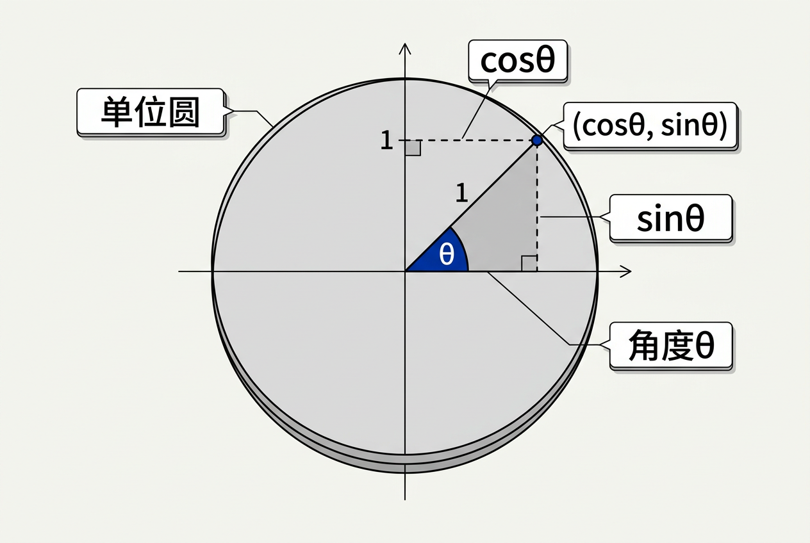
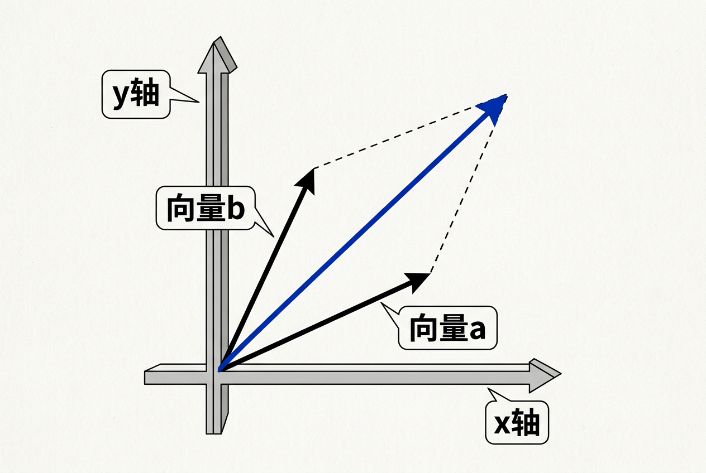
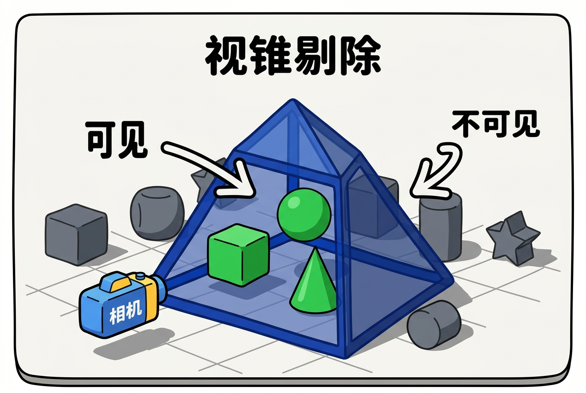
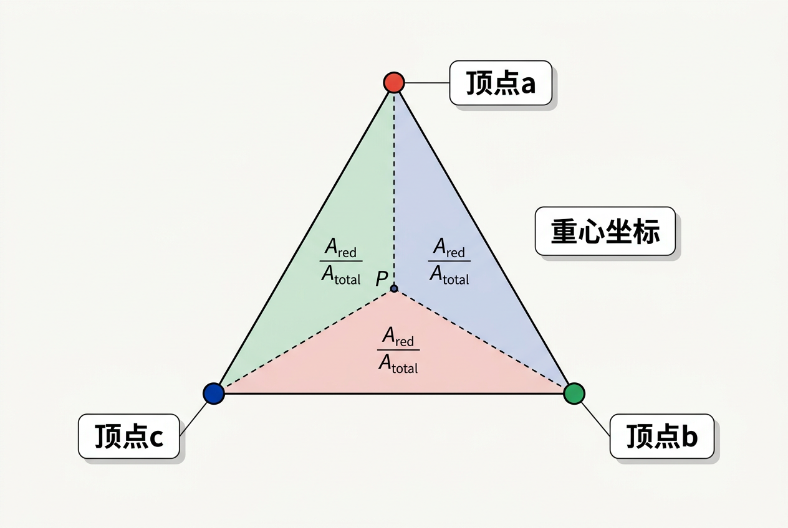

第2章：杂项数学 — 零基础讲义
讲义说明
本讲义基于 Steve Marschner & Peter Shirley 所著《虎书5》第5版第2章（p.13-62）。
本章是全书最"杂"的一章——它涵盖了图形学中用到的各种数学工具，从集合映射到蒙特卡洛积分。
作者建议：先快速浏览，了解各节内容，需要时回头查阅。本讲义旨在帮你建立直观理解，而非追求数学严谨性。
本版插画采用 Guizang 材质插画风格重新绘制。
学习目标
- 理解集合与映射的数学记号，并能与编程概念对应
- 用二次方程求根公式解决光线-球体求交等图形学问题
- 理解三角函数在图形学中的几何含义
- 掌握向量加减、点积、叉积的几何意义和编程实现
- 理解"隐式 vs 参数化"两种曲线/曲面表示的核心区别
- 解释重心坐标是什么，以及为什么它对图形学如此重要
- 理解期望、方差、蒙特卡洛积分的基本思想
2.1 集合与映射（Sets and Mappings）
2.1.1 为什么图形学需要集合和映射？
它解决什么问题？图形学是"把数学转换成图像"的过程。而数学的"语言"就是集合和映射。如果你不理解这些符号，你就看不懂图形学论文、读不懂图形学代码的注释。集合和映射就是"数学和编程之间的翻译官"。
2.1.2 数学记号 ←→ 编程语言翻译
很多初学者觉得数学记号可怕——说实话，我第一次看到 f : ℝ → ℤ 也觉得"这什么鬼"。但只要把它翻译成编程语言，就豁然开朗了：
| 数学记号 | 读法 | 编程翻译 |
|---|---|---|
a ∈ S | "a 是集合 S 的元素" | S.contains(a) |
A × B | "A 和 B 的笛卡尔积" | 所有 (a, b) 对的集合，其中 a∈A, b∈B |
f : ℝ → ℤ | "f 是从实数集到整数集的映射" | int f(float x) { ... } |
f(a) | "a 在 f 下的像" | f(a) 的返回值 |
关键等价关系：
int f(real x) ↔ f : ℝ → ℤ
↓↓↓ ↓↓↓
函数名叫 f 函数名叫 f
接收一个实数 定义域 domain 是 ℝ（实数集）
返回一个整数 目标域 target 是 ℤ（整数集）逐词翻译：
- Domain（定义域）：函数能接受的所有输入值的集合。 = 编程中的"参数类型"
- Target（目标域）：函数可能输出的值的集合。 = 编程中的"返回值类型"
- Range（值域）：Target 中实际被映射到的子集——不是所有目标域的值都会被用到。
数字例子：
f : ℝ → ℤ, f(x) = floor(x)
定义域 = ℝ 若 x = 3.14，则 f(x) = 3
值域 = ℤ 的子集（只有整数，不会输出 2.5）
target 是 ℤ，但 range 只是 ℤ 的一部分2.1.3 图形学中常用的集合
| 记号 | 含义 | 图形学用途 |
|---|---|---|
| ℝ | 实数集 | 所有连续数值——颜色强度、距离、时间 |
| ℝ⁺ | 非负实数（含0） | 距离、颜色值——这些永远不会是负数 |
| ℝ² | 二维平面的有序对 | 2D屏幕坐标 (x, y), UV纹理坐标 |
| ℝⁿ | n维笛卡尔空间 | 3D坐标用 ℝ³，齐次坐标用 ℝ⁴ |
| ℤ | 整数集 | 像素坐标 (0, 1, 2...)、顶点索引 |
| 𝕊² | 单位球面上的3D点 | 法线方向、光线方向——"所有单位长度的3D向量" |
f : ℝ → ℝ, f(x) = x² 的值域是什么？和它的 target（ℝ）一样吗？
值域是 [0, ∞)——所有非负实数。因为 x² 不可能是负数。target 是 ℝ（全部实数），但 range 只是 ℝ 的一个子集。所以 range ≠ target。
2.2 解二次方程（Solving Quadratic Equations）
2.2.1 为什么图形学需要这个？
它解决什么问题？在光线追踪中，最常见的一个操作是"判断一条光线是否碰到了某个球体"。光线的路径是一条直线，球体是一个完美的球面。把直线方程代入球面方程，你会得到一个二次方程。解这个二次方程，你就知道了光线什么时候碰到球面。
这不是一个"理论上需要"的东西——写光线追踪器的每一行代码，你都在解二次方程。
2.2.2 标准形式
解（求根公式）：
每个符号的含义：
- A, B, C：已知系数（在光线-球体求交中，它们来自光线方向和球体位置）
- x ：未知数（在光线追踪中，x 就是光线参数 t——光线上距离起点的距离）
- ±：表示有两个可能的解（"正解"和"负解"）
2.2.3 判别式 D = B² - 4AC
判别式决定了方程有多少个实数解：
| 判别式 D | 解的数量 | 图形学含义 |
|---|---|---|
| D > 0 | 两个不同实根 | 光线穿过球体——先碰到前面（较小根），再穿出后面（较大根） |
| D = 0 | 一个实根（重根） | 光线擦着球体表面经过——"刚好碰到" |
| D < 0 | 无实根 | 光线完全没碰到球体——"错过" |
2.2.4 数值稳定性问题（为什么计算机计算时还会出错？）
直接套求根公式在计算机中可能因为 B² 远大于 4AC 而导致精度丢失。如果 B² 很大，√(B² - 4AC) 和 |B| 几乎相等，那么 -B + √D 或者 -B - √D 中会有一个涉及"两个几乎相等的数相减"，这会导致浮点数精度问题（catastrophic cancellation）。
更鲁棒的方法是：
// 先算判别式
double discriminant = B*B - 4*A*C;
if (discriminant < 0) return 0; // 无解
double sqrtD = sqrt(discriminant);
// 先用"减法版本"算一个根（更稳定）
double x1 = (-B - sqrtD) / (2*A);
double x2 = (-B + sqrtD) / (2*A);光线 → ●══════●
x1 x2
从摄像机出发，先碰到 x1 处（进入球体），后碰到 x2 处（穿出球体）
我们要的是 x1（最小的正数）(-B - sqrtD) 比 (-B + sqrtD) 更稳定？
当 B 为正时，-B - sqrtD 是两个同号的负数相加，不会损失精度。而 -B + sqrtD 是两个接近的数相减（-B 和 +sqrtD 绝对值接近），会导致有效数字丢失。这个策略选择取决于 B 的符号，推荐查阅数值分析教材了解更完整的处理方法。
2.3 三角学（Trigonometry）
2.3.1 为什么图形学需要三角函数？
它解决什么问题？图形学中到处是"角度"：
- 光线碰到表面时，入射角决定了反射强度
- 相机看场景时，视角决定了能看到什么
- 旋转一个物体时，你需要知道旋转角度对应的正弦和余弦
三角函数就是把"角度"和"坐标"联系起来的桥梁。
2.3.2 单位圆定义（最重要的理解方式）

单位圆是理解三角函数的金钥匙：画一个半径为1的圆，圆心在原点。从圆心出发，沿着某个角度 θ 画一条射线，这条射线与圆的交点就是 (cos θ, sin θ)。
就是这么简单。cos θ 就是交点的 x 坐标，sin θ 就是交点的 y 坐标。
为什么这个等式总是成立？因为单位圆的方程就是 x² + y² = 1，而 (cos θ, sin θ) 在单位圆上。所以 cos²θ + sin²θ = 1 永远成立。
2.3.3 余弦定理
给定三角形边长 a、b、c，夹角 θ（c的对边），那么：
当 θ = 90°（直角）时，cos θ = 0，公式退化为：
所以勾股定理只是余弦定理的一个特殊情况（90°角的情况）。
2.3.4 图形学中最常用的三角函数用途
| 用途 | 说明 | 出现章节 |
|---|---|---|
| 旋转 | 绕轴旋转用 sin/cos 构造旋转矩阵 | Ch7 变换矩阵 |
| 光照 | Lambertian 漫反射依赖 cos θ（法线与光线夹角） | Ch5 表面着色 |
| 球面坐标 | 经度/纬度映射到 (x, y, z) | Ch4 光线追踪 |
| 波形函数 | sin/cos 用于产生波浪、动画曲线 | Ch15 曲线 |
atan2(y, x) 和 atan(y/x) 有什么区别？为什么图形学中我们总是用 atan2？
atan(y/x)无法区分 x 为正还是负——它只返回 [-π/2, π/2] 的值。atan2(y, x)根据 x 和 y 的符号判断象限，返回 [-π, π] 的完整角度。比如 atan2(1, -1) = 135°，而 atan(1/ -1) = -45°——出错了！图形学中方向判断经常涉及所有四个象限，所以必须用 atan2。
2.4 向量（Vectors）
2.4.1 图形学最基本的数据类型
它解决什么问题？在3D世界中，一切都需要位置和方向。物体在哪？它往哪看？光线往哪走？法线朝哪？——这些都是用"向量"表示的。
向量可以看作是"带箭头的线段"，有两个核心属性：
- 方向：箭头指向哪
- 大小（长度）：箭头有多长
最重要的理解：向量只有"方向和大小"，没有"位置"。向量 (1,2,3) 可以从原点出发，也可以从 (100, 200, 300) 出发——它们都是同一个向量。因为方向和大小没变。
2.4.2 基本操作
| 操作 | 公式 | 几何意义 |
|---|---|---|
| 加法 | (x₁, y₁) + (x₂, y₂) = (x₁+x₂, y₁+y₂) | 平行四边形法则——两个向量首尾相接 |
| 减法 | (x₁, y₁) - (x₂, y₂) = (x₁-x₂, y₁-y₂) | 得到"从第二个到第一个"的向量 |
| 标量乘 | k · (x, y) = (k·x, k·y) | 缩放向量长度（k>1拉长，k<1缩短） |
| 长度 | |v| = √(x² + y² + z²) | 向量的"大小"——三维勾股定理 |

2.4.3 点积（Dot Product）——图形学最重要的运算

每个符号的含义：
- a, b：两个向量
- |a|, |b|：它们的长度
- θ：两个向量之间的夹角
- a · b：点积的结果是一个标量（一个数），不是一个向量
几何含义：点积衡量两个向量的"对齐程度"。
| 点积值 | 夹角θ | 含义 | 图形学应用 |
|---|---|---|---|
| a · b > 0 | θ < 90° | 方向相近 | 光线朝向光源 → 被照亮 |
| a · b = 0 | θ = 90° | 垂直 | 检测光线是否平行于平面 |
| a · b < 0 | θ > 90° | 方向相反 | 表面背对光源 → 阴影中 |
为什么点积如此重要？用一个真实代码来理解：
// 1. 漫反射光照——图形学中最基本的着色计算
// 问题的第1行：法线 normal 和光线方向 lightDir 的夹角决定了亮度
float diffuse = dot(normalize(normal), normalize(lightDir));
// diff = cosθ，θ是法线和光线的夹角
// cosθ = 1.0 时（0°角），光线直射表面，最亮
// cosθ = 0.0 时（90°角），光线擦过表面，全暗
// 2. 判断法线朝向
if (diffuse > 0) {
color = baseColor * diffuse; // 照亮
} else {
color = Color(0, 0, 0); // 阴影
}
// 3. 检测光线是否平行于平面
if (abs(dot(rayDir, planeNormal)) < 1e-6) {
// 光线平行于平面，无交点
}2.4.4 叉积（Cross Product）
每个符号的含义：
- n：垂直于 a 和 b 的单位向量（右手定则确定方向）
- |a||b| sin θ：叉积结果的长度 = a 和 b 张成的平行四边形面积
- a × b 的结果是一个向量（不是标量！）——这是和点积最大的区别
几何含义：叉积生成一个同时垂直于两个输入向量的新向量。
// 最常见的叉积应用：从三角形的两条边计算法线
vector3 a = (1, 0, 0), b = (0, 1, 0), c = (0, 0, 0);
// 三角形 abc 的两条边：
vector3 edge1 = b - a; // (-1, 1, 0)
vector3 edge2 = c - a; // (-1, 0, 0)
// 法线 = 两条边的叉积
vector3 normal = cross(edge1, edge2);
normal = normalize(normal); // 归一化为单位向量
// 结果应该是 (0, 0, 1) ——垂直于 xy 平面a × b = -(b × a)
2.4.5 左右手坐标系
| 坐标系 | 叉积方向 | 使用 |
|---|---|---|
| 右手系 | cross(a, b) 由右手定则决定 | OpenGL, Unity |
| 左手系 | cross(a, b) 由左手定则决定 | Direct3D |
2.5 积分（Integration）
2.5.1 图形学为什么需要积分？
它解决什么问题？渲染的核心就是"计算每个像素接收到的光线总量"。光线是从无数个方向来的——你需要对所有这些方向的贡献"累加起来"。这个"累加"的过程就是积分。
用黑箱思考积分：
图形学家的实用视角：
┌──────────┐
│ │
f(x), [a,b] ───→│ integrate │───→ 数值结果
│ │
└──────────┘
更直观的理解：
┌───┐
┌┤ ├┐
┌┤ ├┤├┐
│ │││├┤
┌┤ ├┤├┤├┐
┴┴───┴┴┴┴┴┴──
a b
积分 = 曲线下方的面积 ≈ 切成很多小条，加起来2.6 密度函数（Density Functions）
2.6.1 从概率密度到图形学
它解决什么问题？在渲染中，光线在场景中的分布是不均匀的——有些方向来很多光，有些方向来很少。你需要知道光线的"概率密度"来高效地采样。
生活类比：
- 质量密度 = 单位体积内的质量（kg/m³）——拿在手里感觉"沉不沉"
- 概率密度 = 单位长度/面积/体积内的概率——"你更可能在这里找到这个值"
2.7 曲线与曲面（Curves and Surfaces）
2.7.1 两种根本不同的世界观
它解决什么问题？在图形学中，你需要描述物体的"形状"。一个球体、一个平面、一条曲线——怎么用数学描述它们？有两种完全不同的思路，每一种都有自己的优势和劣势。
| 特性 | 隐式（Implicit） | 参数化（Parametric） |
|---|---|---|
| 形式 | f(x, y) = 0 | (x, y) = (f(t), g(t)) |
| 生活类比 | 像"会员验证" 告诉我一个点，我能验证它是否在曲线上 | 像"路径导航" 告诉我 t 值，我带你到曲线上的对应点 |
| 生成点 | 难（需解方程） | 易（代入参数即可） |
| 判断点是否在上面 | 易（代入验证=0？） | 难（需解方程组） |
关键理解：在光线追踪中，光线用参数化表示（p = o + td），物体用隐式表示（f(p) = 0）。两者联立求解 t。这就是为什么你既需要参数化、又需要隐式！
2.8 线性插值（Linear Interpolation）
2.8.1 图形学中最常用的操作
它解决什么问题？你只知道两个值（比如动画第0帧和第24帧的位置），但你需要中间每一帧的值。线性插值就是"在两个值之间匀着走"。
理解公式：
- 当 t = 0 时，结果是 a（还没出发）
- 当 t = 1 时，结果是 b（到达终点）
- 当 t = 0.5 时，结果是 a 和 b 的中点
- t 就像是一个"进度条"——从 0 走到 1
2.9 三角形与重心坐标（Triangles & Barycentric Coordinates）
2.9.1 为什么三角形这么重要？
它解决什么问题？在图形学中，我们需要给三角形内部的每个像素赋一个颜色。但颜色只定义在三角形的三个顶点上——那么中间的像素颜色是什么？重心坐标就是回答这个问题的工具。
三角形是图形学中的基本建模图元。三点确定一个平面，三角形永远是平的，GPU 专门为画三角形优化。

2.9.2 重心坐标的定义
给定三角形三个顶点 a、b、c，三角形内任意一点 p 可以写成：
每个符号的含义：
- α, β, γ：三个顶点的"权重"，称为重心坐标
- α + β + γ = 1：权重之和为1（"百分百"属于这个三角形）
- α, β, γ ≥ 0：权重不能是负的——负权重点在三角形外部
直观理解：
a
/\
/ \
/ \
/ \
b────────c
靠近a: α 大（离a近 = a的权重大）
靠近b: β 大
靠近c: γ 大
中心点: α = β = γ = 1/3（三个顶点权重相等）
在ab边上: γ = 0（不靠近c）2.9.3 判断点是否在三角形内
如果 0 < α < 1 AND 0 < β < 1 AND 0 < γ < 1
→ 点在三角形内部
如果其中一个坐标 = 0，其他两个在 (0,1) 之间
→ 点在边上
如果其中两个坐标 = 0
→ 点在顶点上2.9.4 重心坐标的神奇性质
同样的 (α, β, γ) 不仅用于混合位置，也用于混合颜色、法线、UV坐标——一切都能插值！
// 三角形的三个顶点各有颜色
color ca = RED; // 顶点a：红色
color cb = GREEN; // 顶点b：绿色
color cc = BLUE; // 顶点c：蓝色
// 三角形内部任一点 p 的颜色
// 注意：α, β, γ 和混合位置时用的完全一样！
color cp = α * ca + β * cb + γ * cc;
// 这就是 Gouraud 着色和纹理映射的基础！四边形的四个顶点不一定共面——在3D空间中，四个点可能形成一个"折叠"的形状。而三角形的三个点总是共面。此外，四边形沿着对角线划分有两个不同的三角剖分方案，插值结果不唯一。所以 GPU 只处理三角形。
2.10 离散概率（Discrete Probability）
2.10.1 图形学为什么需要概率？
它解决什么问题？很多图形学效果是"随机"的——比如蒙特卡洛渲染需要随机采样光线方向，游戏中的暴击/掉宝是随机事件。不理解概率，就无法理解这些技术。
2.10.2 从骰子开始
掷一个六面骰子，结果 X ∈ {1, 2, 3, 4, 5, 6}，每面概率 1/6。
在编程中：
int X = rand_from(1, 6); // X就是随机变量
// 运行时才知道X的值，但知道分布2.10.3 期望值
骰子的期望值：
E[X] = 1·(1/6) + 2·(1/6) + 3·(1/6) + 4·(1/6) + 5·(1/6) + 6·(1/6)
= 3.5注意：期望值不一定是可能的结果（骰子不可能掷出3.5）。它是一种"长期趋势"——掷100万次骰子，平均值会非常接近3.5。
2.11 连续概率（Continuous Probability）
2.11.1 和离散概率的关键区别
离散随机变量：取值是"一个点"（如骰子的1点），某特定值的概率 > 0。
连续随机变量：取值在"一个区间"（如[0, 10]的均匀分布），某特定值的概率 = 0！
为什么特定值的概率是0？因为无限多个可能值，每个值的"份额"趋近于0。就像一条线段——你不可能说"恰好在这一个点上的概率是多少"，因为点是无限细的。
2.12 蒙特卡洛积分（Monte Carlo Integration）
2.12.1 图形学的"杀手锏"
它解决什么问题？渲染的核心——计算"到达每个像素的光线总量"——本质上是一个积分。很多积分你无法用手算出精确值（因为场景太复杂）。蒙特卡洛积分就是"算不出精确值，我们就用随机采样来估计它"。
2.12.2 最简单的理解
// 伪代码——这就是蒙特卡洛积分！
float sum = 0.0;
int N = 10000; // 样本数——越多越精确
for (int i = 0; i < N; i++) {
vec3 v = random_point_on_hemisphere(); // 随机选方向
sum += f(v); // 计算这个方向的光线贡献
}
float average = sum / N; // 取平均这就是蒙特卡洛积分的全部核心：随机采样 → 计算贡献 → 取平均。
2.12.3 从平均值到积分
为什么这个成立？
average(f, domain) = ∫f(x)dx / ∫1·dx
= ∫f(x)dx / size(domain)
所以：
∫f(x)dx = average(f, domain) × size(domain)
半球面积 = 2π，所以：
半球上的积分 = average × 2π2.12.4 重要性采样
它解决什么问题？基础的蒙特卡洛是"在全域均匀采样"——但大多数方向的光线贡献很小，浪费了很多样本。重要性采样就是"在光线贡献大的方向多采样，在贡献小的方向少采样"。
基础蒙特卡洛：在全域均匀采样 → 收敛慢
重要性采样： 按概率密度采样 → 收敛快
关键公式：
∫f(x)dx ≈ (1/N) Σ f(xᵢ) / p(xᵢ)
↑
用概率密度"修正"非均匀采样| 方法 | 采样策略 | 收敛速度 | 实现复杂度 |
|---|---|---|---|
| 均匀采样 | 全域等概率 | 慢（O(1/√N)） | 最简单 |
| 重要性采样 | 按f(x)分布 | 快（O(1/N)） | 需要设计采样分布 |
全章总结
知识地图
第2章：杂项数学
│
┌──────────────┼──────────────┐
│ │ │
基础工具 几何工具 数值方法
│ │ │
┌───┼───┐ ┌────┼────┐ ┌───┼───────┐
│ │ │ │ │ │ │ │ │
集合 三角 二次 向量 曲线 三角 概率 连续 蒙特卡洛
映射 函数 方程 重心 概率 积分
坐标
各小节一句话总结：| 小节 | 一句话 | 图形学应用 |
|---|---|---|
| 2.1 集合与映射 | 数学记号↔编程语言的翻译 | Domain/codomain 对应函数签名 |
| 2.2 二次方程 | 求根公式是最基础的求解工具 | 光线-球体求交、碰撞检测 |
| 2.3 三角学 | sin/cos 描述角度和旋转 | 旋转矩阵、光照、球面坐标 |
| 2.4 向量 | 图形学的"基本数据类型" | 所有位置、方向、法线的表示 |
| 2.5 积分 | 把积分当成黑箱函数 | 渲染方程的核心 |
| 2.6 密度函数 | PDF = 单位长度/面积上的概率 | 采样理论的基础 |
| 2.7 曲线/曲面 | 隐式 vs 参数化——两种世界观 | 隐式适合求交，参数化适合生成 |
| 2.8 线性插值 | lerp：图形学最常用的操作 | 关键帧插值、纹理映射 |
| 2.9 三角形/重心坐标 | α+β+γ=1，混合一切属性 | Gouraud着色、纹理采样 |
| 2.10 离散概率 | 期望值=长期平均 | 游戏掉率、随机事件 |
| 2.11 连续概率 | 连续PDF=单位长度概率密度 | 光照采样分布 |
| 2.12 蒙特卡洛积分 | 随机采样取平均=积分估计 | 路径追踪的核心！ |
- 向量（2.4）是图形学的基本数据类型——"图形学的int和float"
- 重心坐标（2.9）是三角形插值的灵魂——"一切属性的混合器"
- 蒙特卡洛积分（2.12）是现代渲染的核心引擎——"用随机算出精确"
记住作者的原话："多干净的数学，多干净的代码"（The cleaner the math, the cleaner the resulting code）。